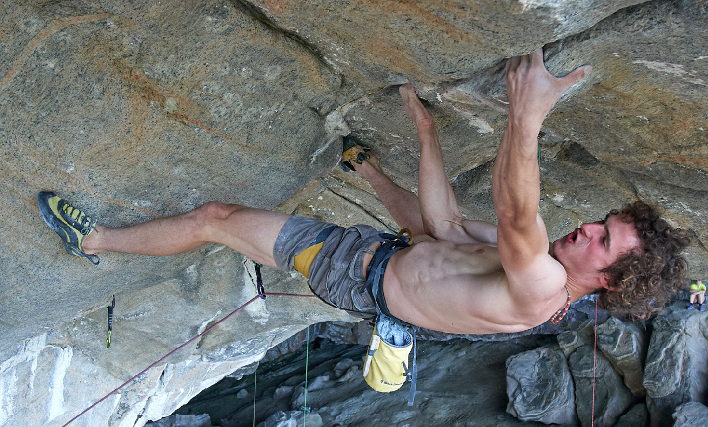
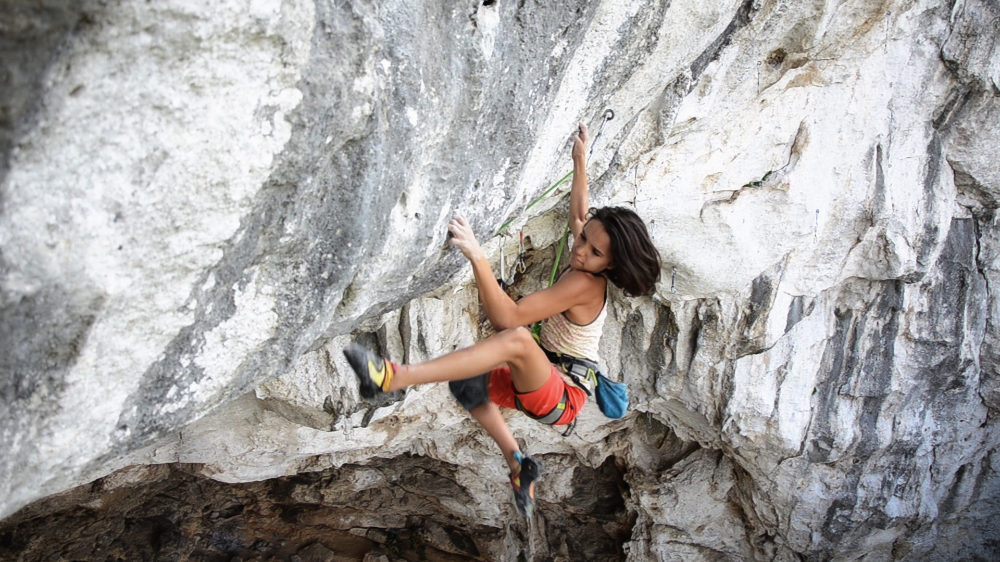

Accueil du site GRIMPRA
1 / 3

Adam Ondra sur Silence
2 / 3

Janja Garnbret à Munich
3 / 3

Oriane Bertone sur Giravuelta
L'histoire du sport
L’escalade, autrefois pratiquée principalement comme moyen d’exploration ou
d’alpinisme, est devenue un sport à part entière au XXe siècle. Initialement cantonnée aux
montagnes et parois naturelles, l’escalade a évolué avec l’apparition des premières
falaises-écoles puis des murs artificiels dans les années 1980. Ce développement a permis la
démocratisation de la pratique et la création de compétitions internationales. Aujourd’hui,
l’escalade sportive, sous ses différentes formes (bloc, difficulté, vitesse), continue de
gagner
en popularité et figure même au programme des Jeux Olympiques depuis 2021.
Les différentes pratiques
Bloc : sans corde, sur des passages courts et intenses, avec crash-pads.
Difficulté (lead) : à la corde sur des voies de 15 à 40 m, on clippe des dégaines ; endurance et lecture.
Vitesse : voie standardisée en salle, chronométrée ; format compétitif.
Falaise sportive : rocher équipé de spits ; sécurité « pré-placée », recherche de la chaîne.
Trad (terrain d’aventure) : protections amovibles (coinceurs, friends) ; engagement et pose des points.
Salle : murs artificiels pour entraînement et compétitions.
Glace/mixte : piolets et crampons sur glace ou rocher+glace.
Psicobloc : sans corde au-dessus de l’eau ; chute dans la mer comme protection.
Difficulté (lead) : à la corde sur des voies de 15 à 40 m, on clippe des dégaines ; endurance et lecture.
Vitesse : voie standardisée en salle, chronométrée ; format compétitif.
Falaise sportive : rocher équipé de spits ; sécurité « pré-placée », recherche de la chaîne.
Trad (terrain d’aventure) : protections amovibles (coinceurs, friends) ; engagement et pose des points.
Salle : murs artificiels pour entraînement et compétitions.
Glace/mixte : piolets et crampons sur glace ou rocher+glace.
Psicobloc : sans corde au-dessus de l’eau ; chute dans la mer comme protection.